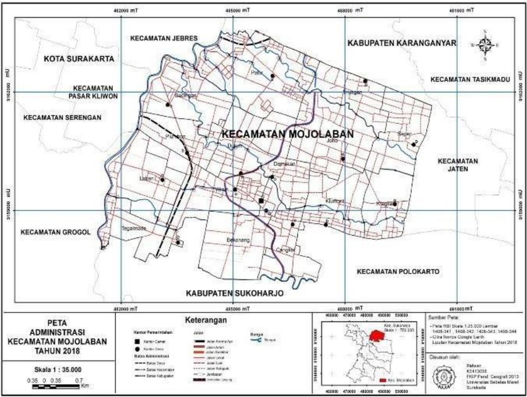

Pusat informasi tiga desa: Palur, Gadingan, dan Plumbon, Kabupaten Sukoharjo.
Pilih DesaMojolaban adalah kecamatan di Kabupaten Sukoharjo, Jawa Tengah, berbatasan dengan Kota Surakarta dan Bengawan Solo. Website ini menghimpun profil dan data dari desa-desa di dalamnya.
